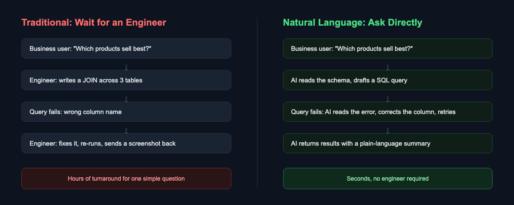
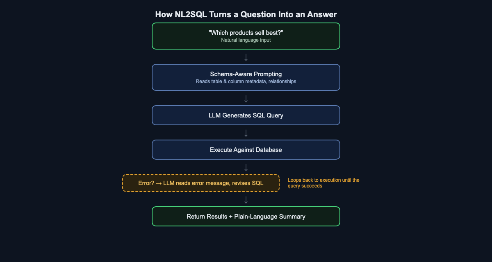

Why Do You Still Need SQL to Ask Your Database a Simple Question?
Natural language querying is quietly closing the gap between "having data" and "getting an answer." Here's how the technology works — and what it looks like when it actually runs.
Picture a Tuesday afternoon. A product manager wants to know which items sold best last quarter. The data is sitting right there, in a database the company has maintained for years. But she can't just ask it. She has to ask an engineer, who has to stop what they're doing, write a query, run it, and send back a screenshot — sometimes hours later, sometimes the next day.
This is one of the strangest bottlenecks in modern software: the data is available, the question is simple, but the interface between the two requires a specialized skill that most people who need answers don't have. That skill is SQL, and for fifty years it has been the toll booth every non-technical question about data has to pass through.
That's finally starting to change — not because SQL is going away, but because a layer of AI now sits between the question and the query, translating one into the other. This is often called NL2SQL (Natural Language to SQL), and it's worth understanding both why the old bottleneck existed and how the new layer actually works.
The Toll Booth Nobody Designed on Purpose
To understand why this gap exists, it helps to go back to why SQL exists at all. When Edgar Codd proposed the relational model in 1970, and IBM researchers followed with SEQUEL (later SQL) in the mid-1970s, the goal was ambitious for its time: let people describe what data they wanted, not how to retrieve it. Compared to the procedural, record-by-record access patterns that came before, SQL was a genuine leap toward accessibility.
But "accessible" was relative to 1975, not to a modern business user. SQL still requires knowing that a JOIN connects two tables, that a GROUP BY needs to appear before an ORDER BY, that a column called qty in one table might be called quantity in another, and that a single misplaced comma turns a working query into a syntax error. None of this is intuitive to someone whose expertise is marketing, or supply chain, or finance — and there was never a next evolutionary step that made it easier. Business intelligence dashboards helped, but only for questions someone anticipated in advance. The moment your question falls outside a pre-built dashboard, you're back to needing an engineer.
So for five decades, the arrangement stayed the same: the people who understood the business questions were rarely the people who could write the query, and the people who could write the query were rarely the people who understood why the question mattered. Every ad-hoc question routed through a translation layer made of actual human beings.
The industry did try to solve this — just not by making SQL itself easier. Business intelligence tools like Tableau, Looker, and Power BI built an entire product category around letting non-engineers drag and drop their way to a chart, and self-service BI became a genuine buzzword through the 2010s. But drag-and-drop interfaces solve a narrower problem than they appear to. They work well for questions someone anticipated when they built the dashboard: revenue by region, signups by week, tickets by category. The moment your actual question is one nobody thought to pre-build — "which customers who churned last month had also filed a support ticket in the 30 days before" — you're back to filing a request with a data team and waiting in a queue. The dashboard didn't remove the toll booth. It just pre-paid the toll for a fixed set of routes.

The Technical Shift: Teaching a Model to Read a Schema
What changed is not that SQL got easier — it's that large language models became good enough at a very specific task: reading a database's structure and a plain-English question, and producing a syntactically correct, semantically appropriate query. This is the core of NL2SQL, and it breaks down into a few distinct steps worth understanding individually.
Schema-aware prompting. An LLM can't guess your table and column names — it has to be told what they are. Before generating anything, the system feeds the model a description of the relevant tables, their columns, data types, and the foreign-key relationships between them. This is the single most important ingredient in making NL2SQL reliable: a model with an accurate, well-scoped view of the schema will produce dramatically better queries than one guessing blind. This is also where most of the engineering effort in a production NL2SQL system actually goes — not in the language generation itself, but in how much of the schema to expose, how to summarize large schemas that would overflow a context window, and how to keep that description current as the database evolves.
Query generation. With the schema in hand, the model translates the natural-language question into SQL — deciding which tables to join, which columns to aggregate, and how to phrase filters and sort order. This is the part that looks like magic from the outside, but it's really pattern-matching over an enormous amount of training data that includes SQL, database documentation, and the relationship between questions and queries.
Execution and error correction. This is the step that separates a toy demo from something usable. The first SQL query a model writes is not always correct — column names get guessed wrong, join conditions are subtly off, or a table is referenced by a plausible-sounding name that doesn't actually exist in the schema. A production-grade system doesn't stop at the first failure. It executes the query, and if the database returns an error, it feeds that error message back to the model as new context, and asks it to revise the query. This loop — generate, execute, read the error, retry — is often more responsible for a good user experience than the initial query generation itself.
Result interpretation. Once a query succeeds, the raw output is usually a table of rows and numbers. The last step is turning that back into language: summarizing what the numbers mean in the context of the original question, so the person asking doesn't have to interpret a results table themselves.

The Part That Doesn't Show Up in the Demo: Scale
A four-table demo database makes schema-aware prompting look almost trivial — just describe the tables and let the model work. Real enterprise databases are rarely that polite. It's common for a single production system to have hundreds or even thousands of tables, many of them legacy, inconsistently named, or barely documented. You cannot simply paste "the entire schema" into a prompt; it would blow past any model's context window long before you got to hundreds of tables, and even if it fit, burying the model in irrelevant tables makes it more likely to pick the wrong one.
This is where NL2SQL systems borrow a technique from retrieval-augmented generation (RAG): instead of exposing the whole schema, the system first retrieves only the tables and columns that are actually relevant to the question being asked, typically by comparing the semantic similarity between the question and a stored description of each table. A question about "product sales" retrieves the Product, Order, and OrderLine tables and ignores the four hundred other tables related to shipping logistics or internal HR records. Only this narrowed, relevant slice of the schema gets handed to the model for query generation. Getting this retrieval step right — deciding what counts as "relevant enough" to include — turns out to matter as much as the language model itself. A great model with the wrong five tables in front of it will still write a wrong query, confidently.
Where NL2SQL Still Needs Guardrails
None of this makes the technology magic, and it's worth being honest about where it still needs real engineering discipline sitting around it, not just a good model.
Ambiguity is not a bug you can fully patch out. "Which products sell best" can mean best by units sold, best by revenue, or best by profit margin — and the example later in this article shows exactly that ambiguity being handled by presenting more than one interpretation rather than silently picking one. A well-built system either asks a clarifying question or, as we'll see, shows its work across multiple reasonable readings of the question. A poorly built one just picks one silently and calls it done.
Read-only by default, permissions enforced underneath. A system that can generate SQL from plain language should, as a baseline, generate SELECT statements only, and it should run those statements against a database connection whose permissions already reflect what that particular user is allowed to see — row-level security and column-level restrictions don't go away just because the interface changed. Natural language is not an excuse to bypass access control; it's a new front door that still has to walk through the same locks.
Not every "successful" query is a correct one. The execution loop described earlier catches queries that the database rejects. It does nothing for a query that runs, returns a plausible-looking number, and is simply wrong in a way the database has no way of flagging — a JOIN that silently duplicates rows and inflates a sum, for instance. This is why the better implementations show their SQL alongside the answer, not just the final sentence. A reader who can see the query has a chance to sanity-check it; a reader who only sees a confident paragraph of prose does not.
Expensive queries are still expensive. A model that doesn't understand the cost of a full table scan across a billion-row table can generate something syntactically perfect and operationally disastrous. Production systems typically wrap generated queries with row limits, timeouts, and query-plan checks before anything actually executes against a live database.
None of these are reasons to dismiss the technology — they're the reasons a serious implementation looks more like an engineered pipeline with a language model as one component, rather than a language model with a database bolted on.
Watching It Actually Happen
All of this is easier to understand with a concrete example, so here's a real run from AITerm, a desktop tool that lets you query a connected database using plain language.
The question typed in was simple: "Which products sell best?" — the same question the product manager in our opening scenario would have had to route through an engineer.

Look closely at what happens in the trace above, because it's a clean illustration of the execution-and-correction loop described earlier. The first attempt generates a query that references t.Title — a reasonable-sounding column name, given the table is called Track. But the database rejects it: no such column: t.Title. The actual column in this schema is named t.Name, not t.Title. Rather than surfacing that error to the user as a dead end, the system reads the failure, revises the query to reference the correct column, and re-executes — this time successfully, returning ten rows ranked by quantity sold and total revenue.
The final step is the summary, and it's worth pausing on how it handles the ambiguity flagged in the guardrails section above. "Which products sell best" doesn't have one obvious meaning — best by units moved, or best by revenue? Rather than silently picking one, the summary explicitly separates the two readings: it notes that "The Trooper" leads on unit volume, then checks whether it also leads on revenue, confirms it does, and calls out that a few runner-up tracks are close behind on both measures. Only after resolving that ambiguity does it state the headline numbers directly — sales volume champion and revenue champion — without requiring anyone reading it to know what SUM(il.Quantity * il.UnitPrice) means.
What's notable here isn't that the query eventually succeeded — it's that the failure was invisible to the person asking the question. In the traditional model, "no such column: t.Title" is the kind of error message that gets forwarded to an engineer, who fixes it and re-runs the query, adding another round-trip to the wait. In this model, the correction happens inside a single request, and the person who asked the question never has to know a column name was wrong in the first place.
What This Actually Changes
The interesting part of this shift isn't the novelty of talking to a database in English — it's what happens to an organization when the toll booth disappears. Questions that used to be filtered by "is this worth bothering an engineer for" stop being filtered at all. A marketing lead can check a hypothesis mid-meeting instead of filing a request and waiting. A support manager can ask "which customers had the most tickets last month" the moment the thought occurs to them, not three days later when it's no longer as useful. A finance analyst preparing for a board meeting can chase down five follow-up questions in the time it used to take to get one query back from a data team's ticket queue.
The volume of questions that get asked at all tends to go up, not just the speed of the ones that were already being asked. That's the part that's easy to miss: most of the value here isn't in making the existing, already-important queries faster. It's in surfacing the questions that were never worth the friction of asking in the first place — the small, curious, "I wonder if" questions that used to die in someone's head because filing a data request for them felt disproportionate to how much they mattered.
This doesn't eliminate the need for engineers, schema design, or data governance — if anything, well-modeled, well-documented schemas become more valuable, since they're what an NL2SQL system reads to do its job well, and the guardrails described above (permissions, row limits, query review) still need someone to build and maintain them. What it does eliminate is the requirement that every single question pass through a person who happens to know a query language. Data stops being something only engineers can talk to, and starts being something the whole organization can just ask.
If you want to see this running against your own database, AITerm is worth a look: https://jamesju9999.github.io/aiterm-site/en.html
Found this useful? Hit the clap button (you can clap up to 50 times!) and follow me for more on AI-assisted development, databases, and the tools quietly changing how people work with data.